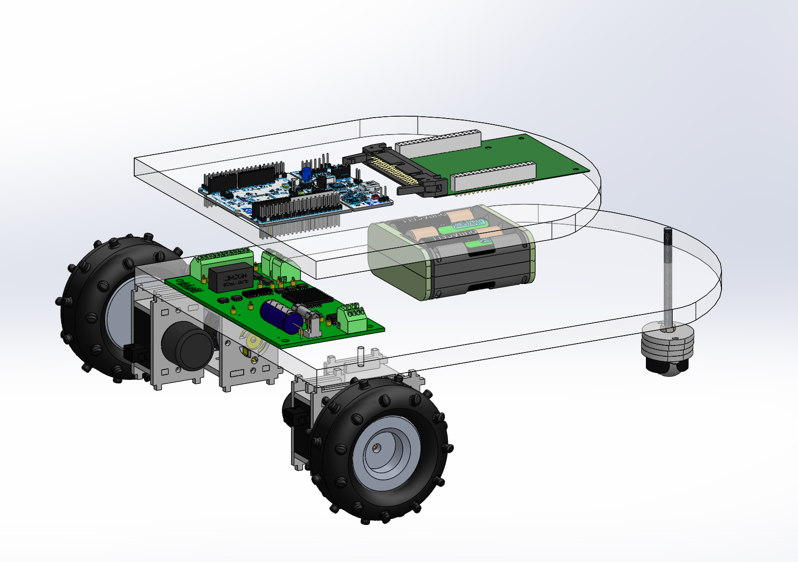
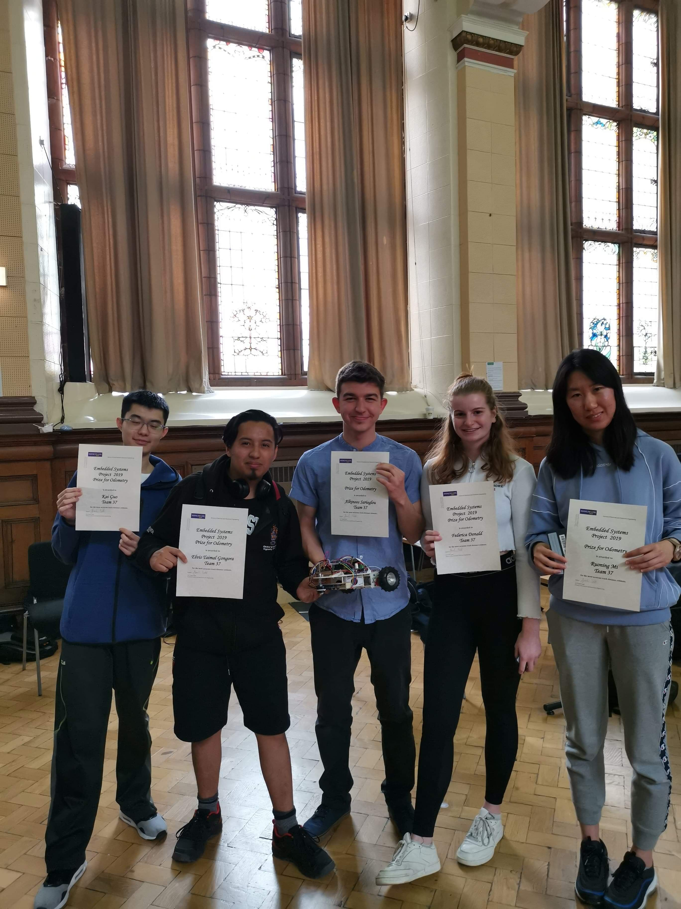

Embedded Systems Project
During my second year at university we had to create an autononomous line following buggy. We were placed into groups of 5 and the project lasted the entire year with a race day at the end. We used Arduino microcontrollers.
First Semester
In the first semester, the main goal was planning. Reports were written based off both hardware and software implementations we decided to use. We performed experiments to test the gear ratio required given the maximum incline of a ramp we would have to scale. Several calculations were performed in order to work this out. We also had to decide on the sensors that we would be using to detect the white line on the floor. We were told to consider interference of natural light to our readings. After thorough testing of multiple types of sesnsors we went with an IR sensor to remove daylight interference.

In the second report we evaluated the different types of control systems we could use to implement the line following behavior. In the end we decided to go with a PID controller as we believed it gave us the opportunity to gain the smoothest response instead of an on-off control system.
In addition to the gear ratios we also decided on the material the buggy would be made out of and the dimensions of the main surface. To come to this decision we put different materials under simulation given an approximation of the weight of all the components we would need to successfully run the buggy. Our final CAD model can be seen in the first picture.
Second Semester
The main aim of second semester was getting the buggy to work. At the start this consisted of building the buggy. In order to work optimally as a team we split off into hardware/software groups. I was part of the software and we started to work on the initial foundations of the code we would need. To do this, we used the mbed IDE.
Our first step was to get the motor working and make our buggy go forward for a set amount of time. We interfaced the controller with the correct pins in the motor board and got our motor to work. We quickly realised that our motor speed was very dependant on the charge in the batteries - an issue we would find difficult to deal with as time went on.
Our first assessment was driving around a square outlined on the floor. We used our previous 'forwards' code and then developed left turns. We went for a loop approach where a turn was made after we went forward. However, we discovered that our delays would not allow our square to be completed perfectly as the batteries had lost some charge during our testing.


After this hiccup, we moved onto the sensors interface and PID controller code. A ramp was created in the labs and once the controller was responsive we got to testing the different constants required for our desired behavior. During the testing stage we discovered that only a PD controller was neccessary for our function.
Our final buggy can be seen in the 2nd photo.
During the race day, everyone had to go round a short track which evaluted our buggy to the specification we were given at the start. The video of our buggy completing this can be seen at the bottom. We also decided to implement an optional function of estimating the track length. We won the prize for this estimation as we got the closest to the true length out of the entire year. The photo of the team holding our awards can be seen too.
After the compulsory testing, there was a much larger track which for fun everyone who passed the smaller track could complete. This track determined the fastest buggy in the cohort. Unfortunately, our buggy failed at the strobe lighting as it struggled to pick up the true direction of the line.
I think this project was a great experience for me as it was my first big team exercise. I enjoyed working with the group as we worked well and bounced off eachother well. Our personalities complemented eachother very well and we all took on equal responsibility. If I were to do this task again I would research how strobe lighting would impact our sensors and find a way to get around them. I would also implement the control system for the sensors sooner as this was a big part of the final project.